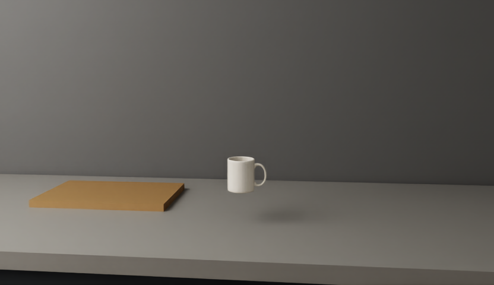
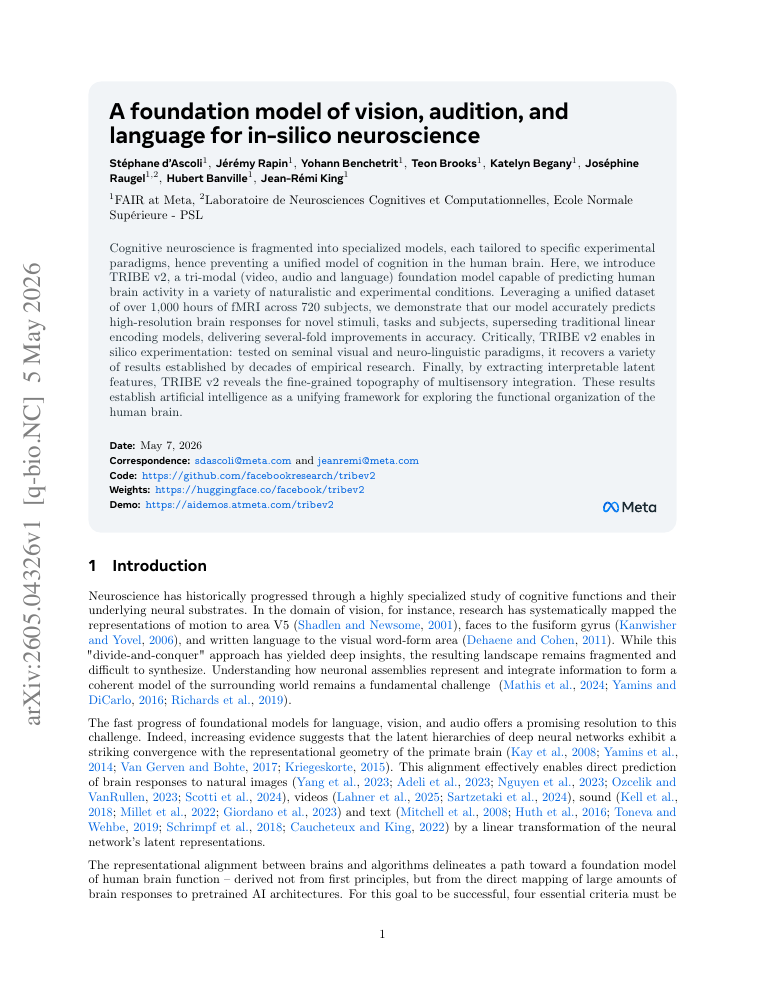
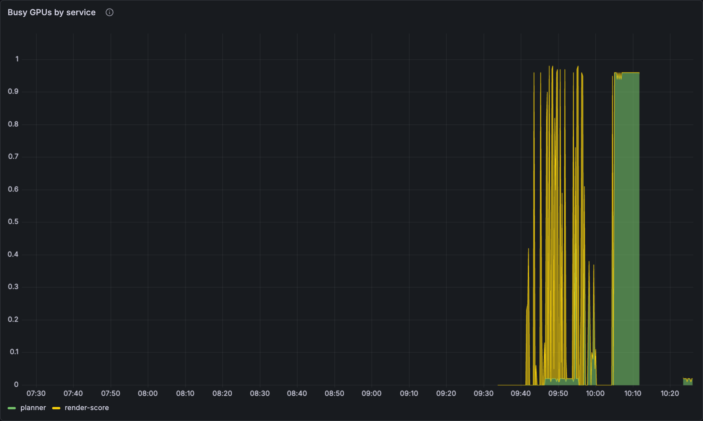
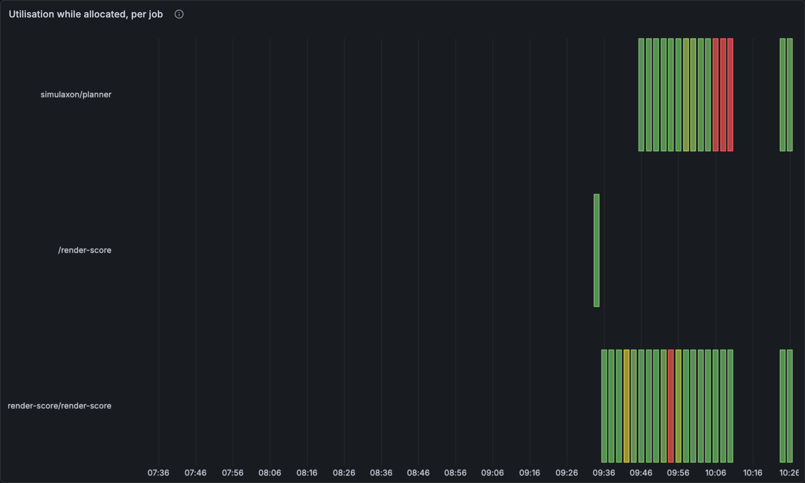
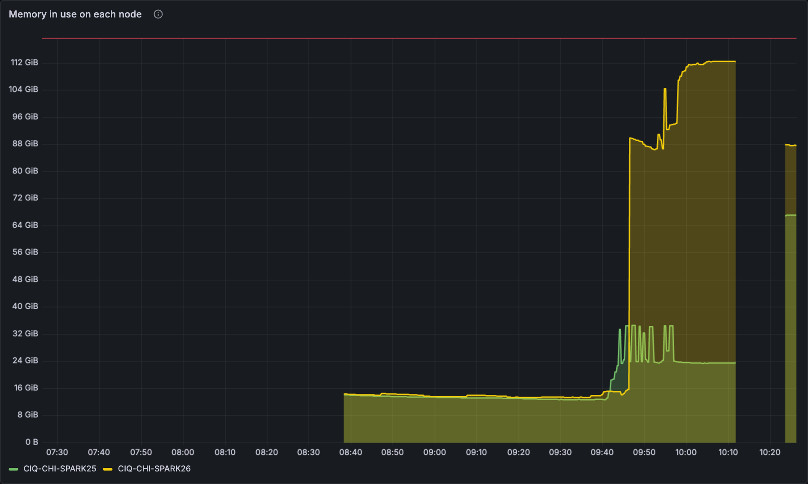
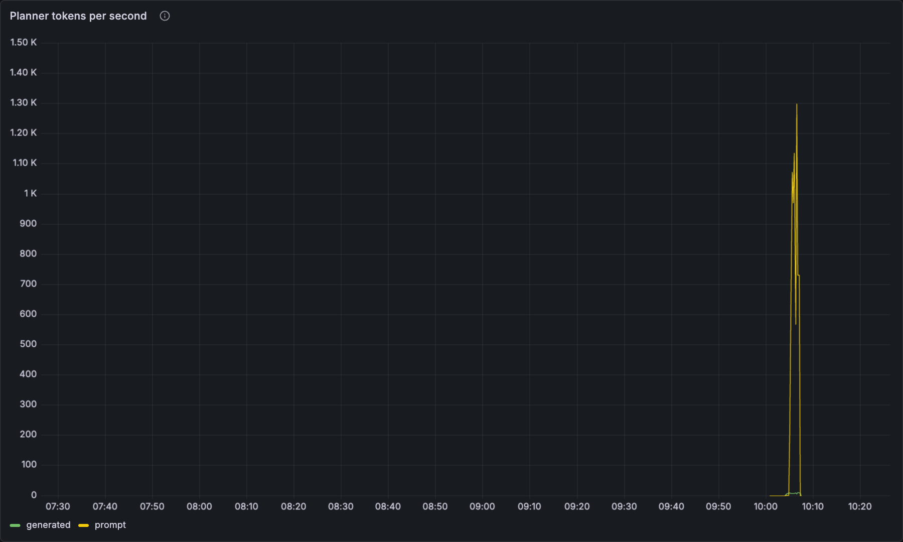
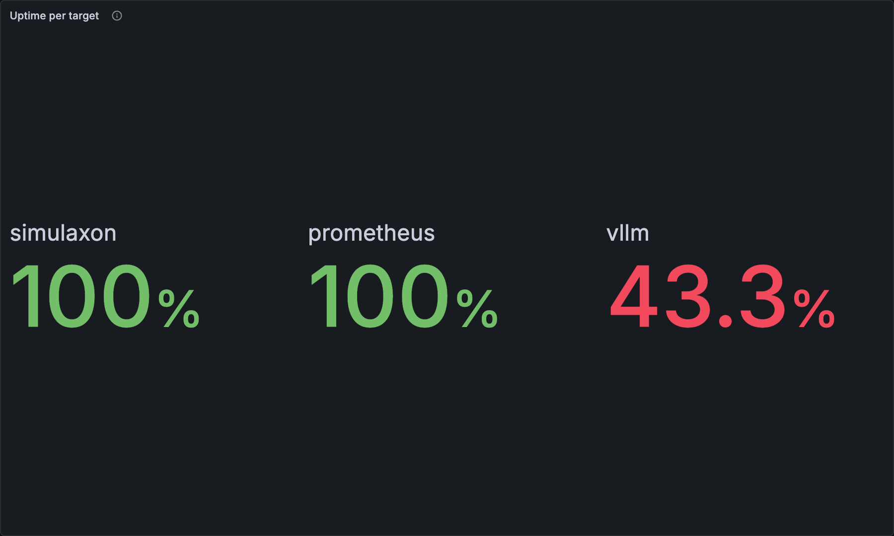

A run in the app: a G1 humanoid in a scanned room, rendered in Isaac Sim, then the same moment restyled to photoreal by Cosmos 3 Nano. Each plays for 4 s, then 6 s of grey, beside TRIBE v2's predicted response on the cortex at each moment.
Scroll
How does the brain make sense of an event as it unfolds?
To find out what drives a response, researchers need to vary what people see, hear, or know going into a scene.
Testing those comparisons with people gets expensive fast. A 20-person fMRI study with one hour per participant can cost nearly $14,000 in scan time alone.
$710 an hour: Harvard Center for Brain Science, academic external, weekday peak, FY27.
Simulaxon gives researchers a way to develop the experiment before they bring in participants.
The agent decides what to vary and what to hold fixed, generates the clips, and compares the predicted brain responses.
It can then run a follow-up to see whether a pattern persists when another detail changes.



The predictions come from Meta's TRIBE v2, which trained on fMRI recordings of people watching films, television, and short videos of everyday events.
In separate evaluations, it recovered known patterns of brain activity for seeing faces versus places and hearing descriptions of emotional versus physical pain.
Trained on Friends and four films, 1,102 three-second clips of everyday events, silent video clips, and podcasts (Table 1). Faces and places: § 2.5. Emotional against physical pain: § 2.6.



TRIBE v2 predicts an average viewer it has never met. Given people's measured fMRI, one click fits an adapter: a map from TRIBE v2's prediction for each brain area to the responses those people had.
Median r over 212 reliable brain areas, on action categories the fit never saw. The line on each bar is the noise ceiling, 0.675: the adapter moves from 38% to 60% of what the data allow, and is higher in 179 of the 212 areas. Same people, scanner and kind of stimulus it was fitted on; it says nothing yet about new stimuli.
The app and the video pipeline together need an estimated 150 GB of memory, so Fuzzball starts them on separate 128 GB workstations and gives both access to the same VAST storage.
When you submit a hypothesis, Nemotron Super 120B plans the experiment on the first workstation.
The app sends the scene specifications to the second, where Isaac Sim renders a reference video, NVIDIA Cosmos 3 Nano uses it to generate realistic footage, and TRIBE v2 predicts the fMRI response to each clip.
The app sends the predictions back to Nemotron to compare conditions. If the agent chooses a follow-up, the app submits it to Fuzzball.

Each round adds its clips, predictions, and log to the same VAST volume, so you can trace each result back to what the agent changed.
78 of 128 GB
72 of 128 GB
The same study code runs on both. The observer study ran on the cluster and matched the Spark's predictions at a median per-clip r of 0.9991.
| Machine | Role | Runs on |
|---|---|---|
| DGX Spark | The desk: the lab app, interactive previews, the agent while a study is designed | The same repository |
| Fuzzball cluster, GB10 nodes | Production: the planner as a service, study runs as workflows and task arrays, Prometheus and Grafana | Rocky Linux; study steps in rockylinux/rockylinux:10 |
Where do the GPU hours go? Busy GPU-seconds per stage: planner, Isaac, Cosmos, TRIBE v2.
Is a GPU working while it is held? Utilisation per job, counted only while the job holds its GPU.
Does each node fit in 128 GB? Memory per service on each node, under the line.
How much work per GPU-hour? Planner tokens per second, with speculative decoding.
Is it up? The share of scrapes each service answered.





Ask the agent to design an experiment around your hypothesis.
Upload footage or describe the scenes you want to test.
Review the generated scenes and predicted responses alongside the agent's follow-up experiments.

Provide a participant's fMRI recordings and the videos they watched. Fine-tune the model in one click to predict how that person would respond to new footage.

Run robotics experiments that use predicted human brain responses to test whether a robot can better anticipate what someone is about to do from the way they move.